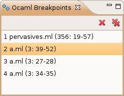

To make the debugger stop at a defined position in your program, you can put a breakpoint at this position. To do so, place the text caret at the position you want the breakpoint to be in the editor, and click on Debug > Put Breakpoint (the debugger must be started for this to work, see Starting the debugger).
If you want to delete all breakpoints, click on Debug > Remove Breakpoints.
You can also see the breakpoints you defined and delete them selectively in the Ocaml Breakpoints view:

In the code editor, breakpoints appear as: